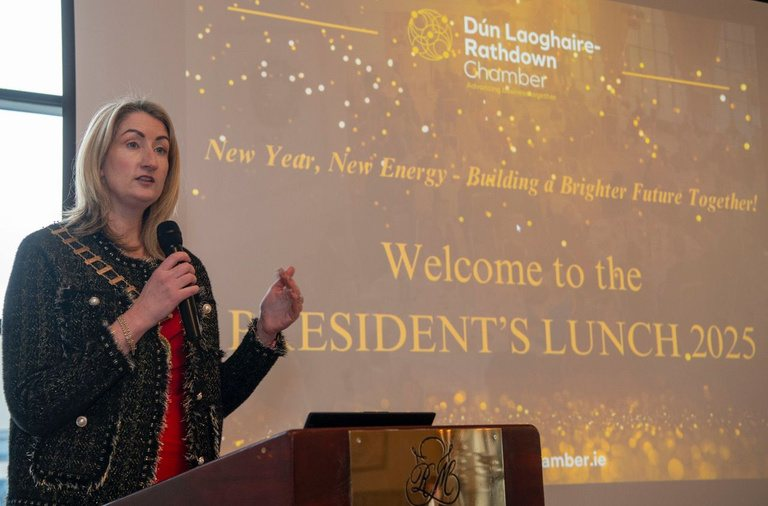
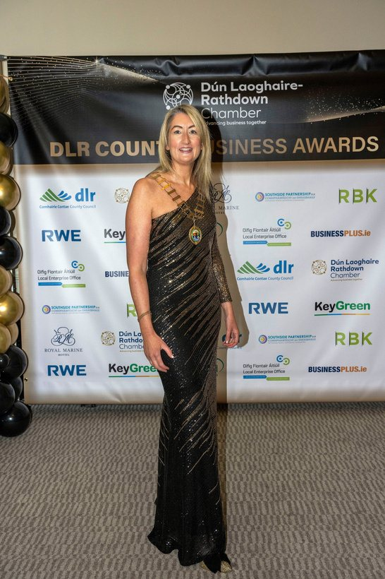

Advise
We offer expert marketing advice. From 25+ years of experience, we guide and direct your business toward the results that matter most. Marketing strategy is our forte.
Straight-talking marketing advice, training and hands-on delivery — from a small Wicklow agency that isn't afraid to roll up its sleeves.
Book your free 15-minute chatHow we work
We offer expert marketing advice. From 25+ years of experience, we guide and direct your business toward the results that matter most. Marketing strategy is our forte.

We bring that same experience into the classroom — virtual or in person — and deliver it with real enthusiasm and passion for the subject: marketing.
Some agencies will only advise. We like to do — we roll up our sleeves and get on with it. When your marketing needs to be executed or outsourced, we're the agency for the job.
We LOVE marketing, plain and simple. We love helping businesses grow to their full potential and beyond, and we love to mentor, guide and direct others — especially when outsourcing marketing isn't an option for your business.
We keep our discussions with you jargon-free, as best we can. We don't add flowery language where it isn't necessary.
Whether your need is to be trained and mentored, or whether your need is to hand over the marketing reins for your business, we are here.
Some businesses start by asking us to create a bespoke marketing strategy — which we ADORE. This often leads on to outsourcing some or all elements of marketing for the business.

Lush Marketing is a female-led marketing agency based in Co. Wicklow, Ireland. Founded by our CEO, Jill Lush, the business is built on the core values of honesty, integrity, trust and knowledge.
Jill's North Star is her daughter, who is autistic — and ultimately the reason the business was born.
Juggling motherhood is never easy, but the business is a huge passion of Jill's and helps her better balance her family life with business commitments. Family first is her approach.
Jill is educated in marketing, business and leadership, with qualifications including a Bachelor of Business Studies from DCU, a Master's-level postgraduate diploma in Digital Marketing, and more recently the Chartered Director Programme with the Institute of Directors — the Certificate and Diploma in Company Direction. Strategy, leadership, governance and finance have been her focus since, and she brings this to the boards and sub-committees she's part of.
Jill is Past President of Dún Laoghaire Rathdown Chamber of Commerce and remains on the board of this growing organisation.
Our team is small but exceptionally productive. Jill always offers internships to marketing students, and loves to see them flourish at Lush Marketing.
Get in touch if you like what you see. We offer a 15-minute complimentary meeting to discuss your marketing needs — book your appointment today.